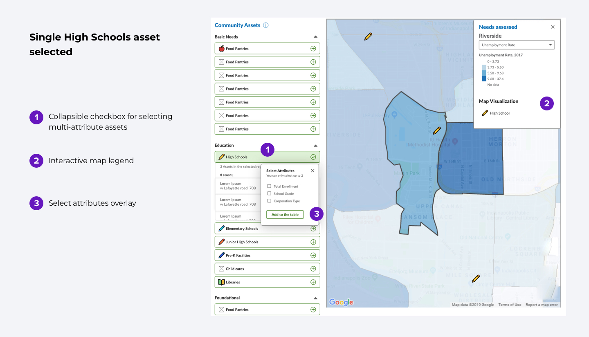
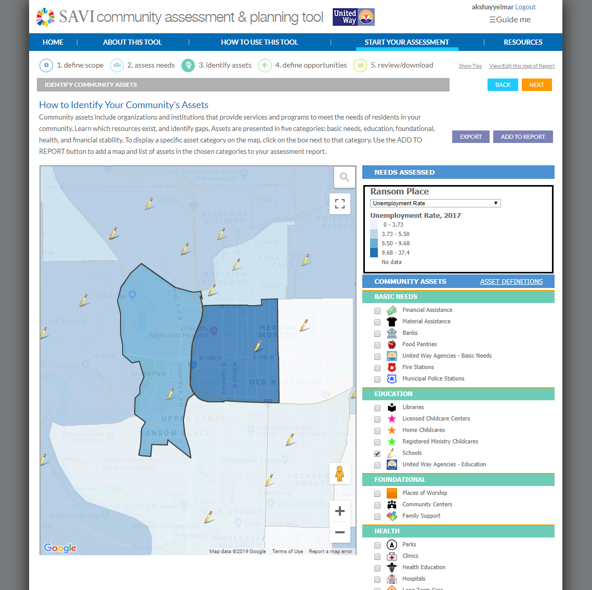
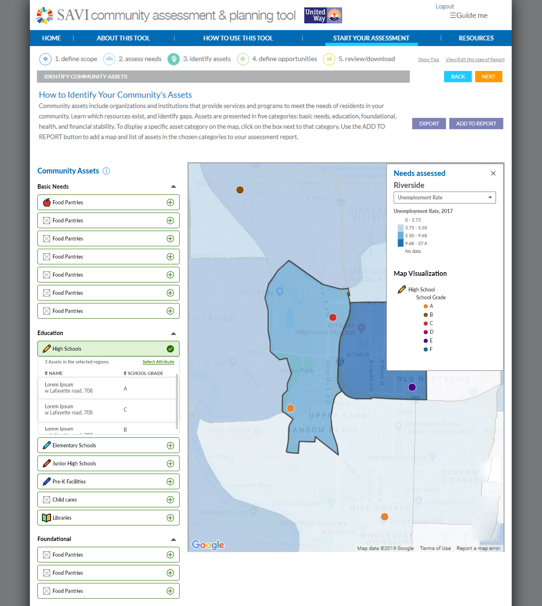
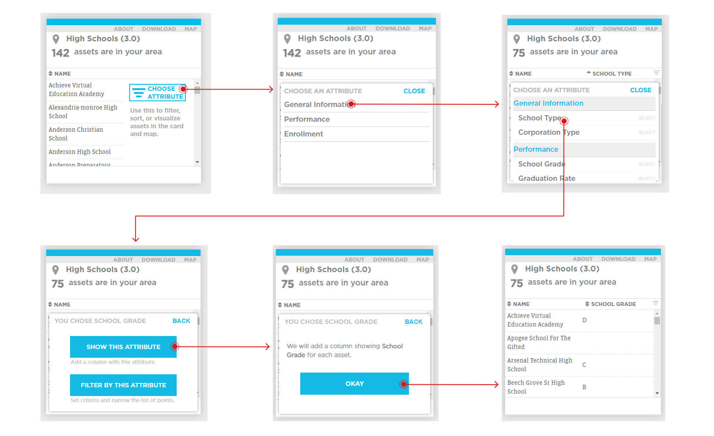
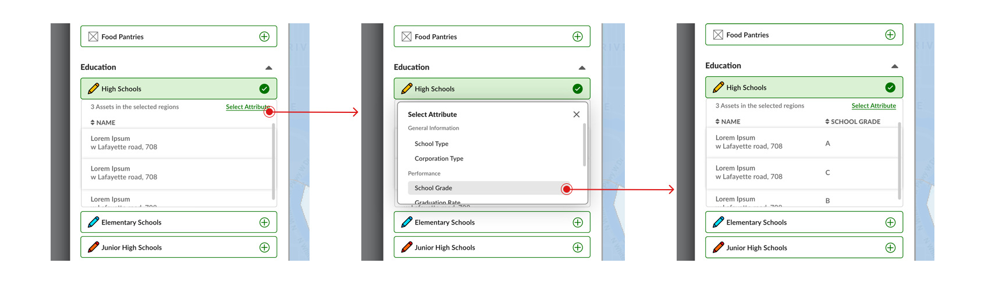
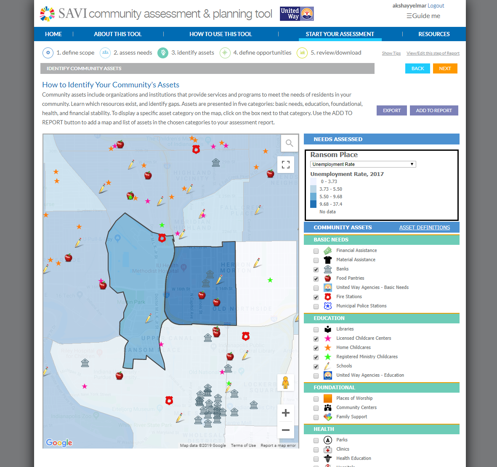
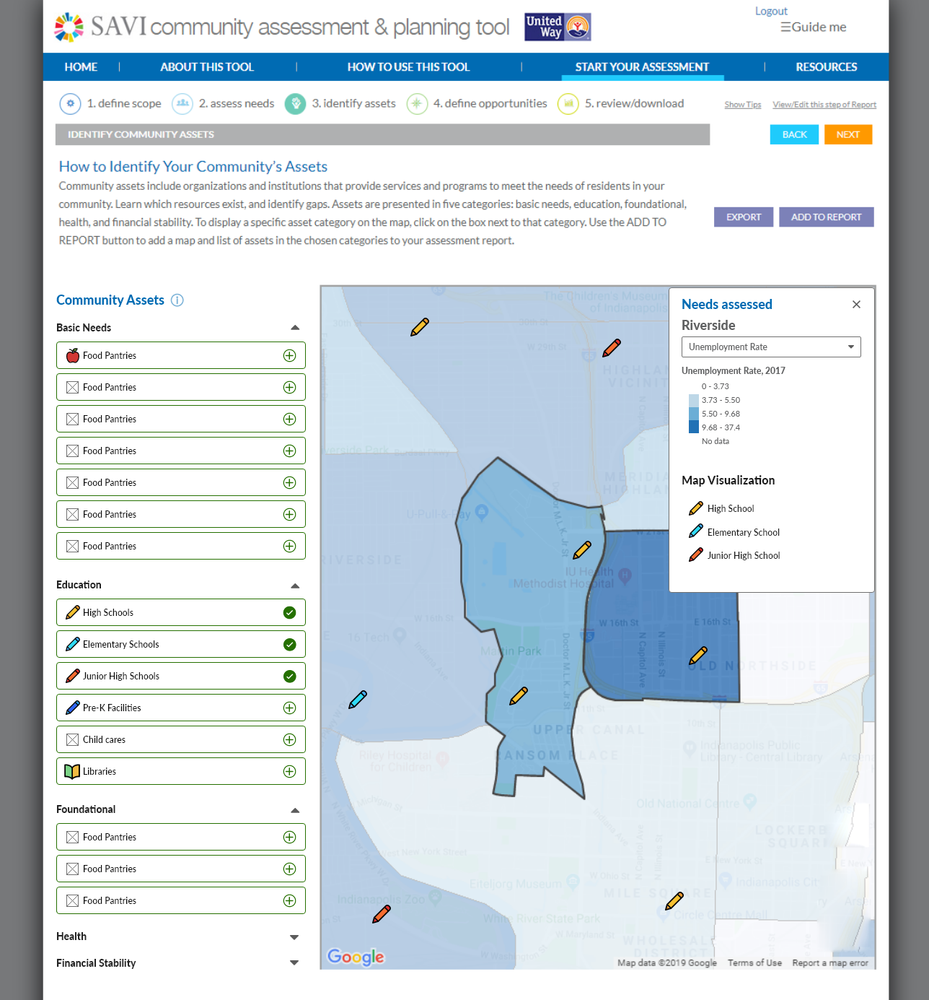
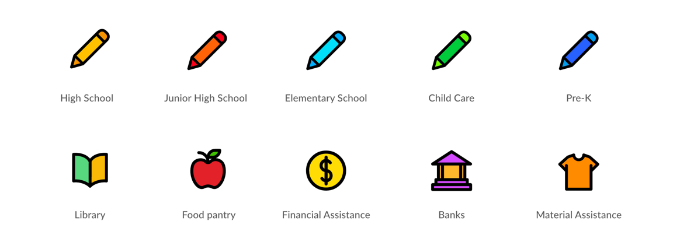

SAVI is a program of the Polis Center at IUPUI. SAVI helps decision-makers and organizations make data-informed decisions by providing various tools and dashboards to analyze community data. The data about the community is available in multiple formats. One of the ways to analyze the data is by exploring the topic profiles where the dashboard provides community data on topics such as education, health, economy, crime and safety, poverty and income, etc. Another tool offered by the SAVI is the 'community assessment tool' which can be used to create a detailed report about a particular area or neighborhood. This project is called "Project Taco" internally, and I primarily worked on one of the modules of this project.
UX Designer
Matt Nowlin (Research Analyst)
Adobe XD
Redesign the existing module to successfully integrate Assets 3.0 data
In the SAVI program, the data about public assets was being updated to multi-attribute data-"Asset 3.0". For example, in the previous version of the assets, a school would have only name and type. The school now has a multi-attribute data school type, corporation type, grade, graduation rate, enrollment data, and trends. This change was being implemented in other tools and dashboards. The requirement was to integrate it with one of the modules of Project Taco. Project Taco is an old system and the challenge was to propose new designs that will have minimum impact on the existing code.
Challenge 1: Maintain the simplicity of the system while offering multi-layered data from Asset 3.0.
Challenge 2: Provide multi-hierarchical data visualization on the map.
Challenge 3: Improve the information architecture of the existing filter component used for accessing Asset 3.0 data.
Existing interface for the 'Identify Assets' module
I started by sketching out a few ideas on a paper for the redesign of a UI component that was being used for the asset selection. I had several rounds of discussion with Matt to validate the ideas, and then I moved on to designing the UI using Adobe XD. Adobe XD was a very convenient tool to iterate and prototype the designs quickly. It also allowed me to share the designs effectively and gather feedback. I followed an iterative design process where, after each iteration, I would share the prototype with the team to evaluate designs and gather feedback.
In the first round of iterations, I explored the possibility of a collapsible checkbox to select the main assets. When the asset is selected, the map gets updated with the respective icon for that asset. One of the issues with icons discovered during this exploration was that they were old and inconsistent. These old icons when placed next to each other or on some areas of the map failed to create proper contrast. I decided to explore a new style of icons while working on the UI component.
In the second round of iteration, the challenge was to visualize the Asset 3.0 on the map. Here the most challenging part was to provide interactions on the dynamic map legend without cluttering the map. I decided to explore different paths for the map visualization component separately. In the first approach, the user can select the attributes of the asset to visualize it on the map. When exploring one type of asset in detail, it was essential to restrict the user from selecting other assets. It would maintain the hierarchy of the data and avoid the clashing between different levels. Later on, after analyzing the approach and gathering the feedback from the team, I decided to remove one level of the school type and split school assets into main assets such as high school, elementary school, junior high school, etc. I used different colors for the same icon to represent these assets.
Map visualization approach 1
Map visualization approach 2
Once I was clear with the map visualization approach, I incorporated the changes in the main design.
After this second round of iteration, I evaluated the interface, and I found that the interactions provided on the map legend were in direct conflict with the asset selection interactions. It could have negatively impacted the overall usability of the interface.
In the third iteration, I tried to address the usability issue found in the previous iteration by reducing the number of interactions. I removed the interactions from the map legend to avoid the conflict. I also redesigned the select attributes overlay to accommodate multiple categorized data types, which is the simplified version of the existing filter component.
The final designs that were delivered achieved following results:
1. Successful integration of multi-layered "Asset 3.0" in the identify assets module of the community assessment tool.
Before
After
2. Optimized information architecture of the existing filter component
Before
After
3. Improved legibility and consistency of the icons
Before
After
Revised iconography
I learned how to make the experience of interacting with such complex data-heavy system less overwhelming for the user. Sometimes we need to restrict the actions of the users to keep things simple. For example, in the map legend, I had to limit the user from selecting multiple sub-attributes of the assets in order to avoid clutter and information overload.